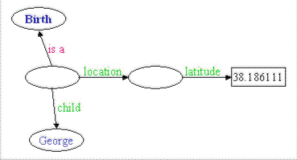
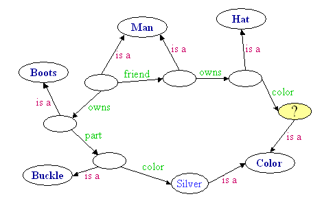

Ask: a Birth (with location with latitude == latitude of Philadelphia) (with child George with mother == mother of a Birth with child Samuel) with weight == weight of a Birth with child Ruby.

Our objective in creating a SADL query language is the same as our objective in creating SADL itself--to enable subject matter experts to build, validate, and maintain semantic models in OWL with as little knowledge of the syntax and idiosyncrasies of the modeling language itself as possible (by substituting another syntax and idiosyncrasies which are closer to English).
Key points:
Other points to consider:
Unimportant (but useful):
Consider this very model:
uri
"http://sadl.org/ReferenceProblem/test".Person is a class, described by age with a single value of type int.
George is a Person with age 23 .
Mary is a Person with age 12 .
What might we ask?
SADL Query Answer SPARQL Equivalent a Person George, Mary select ?p where {?p rdf:type Person} a Person with age < 20 Mary select ?p where {?p rdf:type Person . ?p age ?x . FILTER(?x < 20)}
The pattern for an instance of a class is the same as the instance data declaration form. Either name can be a variable.
<InstanceName> is a <ClassName>
MyRect
is a Shape
x is a Circle
MyRect is an x
x is a y
The pattern for other triples has three forms, depending upon the order of the <subject>, <predicate>, and <object>. One or more of the elements of the triple may be a variable.
The following model illustrates the common syntax across rules, queries, and tests.
uri
"http://sadl.imp/shapes" version "$Revision: 1.1 $ Last modified on $Date: 2013/08/06 17:06:25 $".Shape
is a class, described by area with a single value of type float.
Circle is a type of Shape, described by radius with a single value of type float.Rule
AreaOfCircle:
if x is a Circle
then area of x = radius of x ^2 * PI.Rectangle
is a type of Shape, described by height with a single value of type float,
described by width with a single value of type float.Rule
AreaOfRectangle:
if x is a Rectangle
then area of x = height of x * width of x .MyCircle
is a Circle, has radius 3.5.
MyRect is a Rectangle, has height 3.5, has width 4.5.Test:
MyRect is a Shape.
Test: The area of MyRect is 15.75.
Test: MyCircle has area (> 38.4845110 and < 38.4845111). // testing for an exact floating point value is unreliableAsk:
area of MyCircle.
Ask: area of x is y.
Ask: x is a Shape.
Ask: x has area 15.75.
In this section we will use this model snippet for illustration.
Person
is a class, described by spouse with a single value of type Person,
described by age with a single value of type decimal.Birth is a class described by child with values of type Person,
described by mother with a single value of type Person,
described by location with a single value of type Location,
described by weight with a single value of type float.Location is a class, described by latitude with a single value of type double,
described by longitude with a single value of type double.
Nesting partial triple patterns together can be a way of expressing more complex chains of patterns without variables. SADL patterns use two kinds of nesting. The first uses the keyword "of" and is of the form:
<property> of <subject>
This pattern allows us to "walk the graph" in the backward direction (see figure below), e.g.:
latitude of location of a Birth

For example:
Test:
the latitude of the location of a Birth is 38.186111.
The second nesting pattern uses the keyword "with" and is of the form:
<subject> with <property>
This pattern allows us to "walk the graph" in the forward direction, e.g.:
a Birth with location with latitude
For example:
Ask:
a Birth with location with latitude 38.186111.
The two nesting patterns can be combined to create a graph pattern containing both. We call the node at which the direction of walking changes the "pivot node". For example, this pattern would be matched by all of the people in our model who were born at latitude 38.186111:
child of a Birth with location with latitude 38.186111
The graph pattern in the figure above further constrains the results by specifying a specific value of the child property. Does this pattern represent the figure?
a Birth with location with latitude 38.186111 with child George
The SADL language parser will interpret this to mean that the matching instance of the object of "location" is the subject of the property "child" and, of course, this doesn't match the model or the data. The subject of with phrase (e.g., "with child") is assumed to be the object of the first preceding with phrase having no specified object--the object of "with location" in this case. This is not what we want as "child" has domain Birth. We modify the statement to make it what we intend with the use of parentheses just as we did in the declaration of instance data. The pattern becomes:
a Birth (with location with latitude 38.186111) with child George
Now it is clear that "with child George" modifies "a Birth".
Consider this pattern:
a Birth with location with latitude 38.186111 with child with spouse Martha
Here we have two with clauses that have a specified object value, e.g., "latitude 38.186111" and "spouse Martha". It is clear that "with spouse Martha" must provide the object of "with child" as otherwise it would have no object value. However, it is still unclear whether the subject of the "with child" pattern is the Birth or the Location. Again we obtain the intended meaning with the use of parentheses. The pattern becomes:
a Birth (with location with latitude 38.186111) with child with spouse Martha
As another example of nesting, this pattern identifies the ages of the spouses of all of the people born at latitude 38.186111:
Ask: age of the spouse of a child of a Birth with location with latitude 38.186111.
In English we often nest phrases together to traverse a semantic graph without explicitly identifying the nodes by name. A node without a name is called a "bnode", short for blank node.
What color is the hat owned by the friend of the man who owns the boot with the silver buckle?

How many named instance nodes are there in this graph pattern?
SPARQL allows this and much more complex queries. In SPARQL variables are used to link the triple patterns together into a single graph pattern:
select ?c where {?h <rdf:type> <Hat> . ?h <color> ?c . ?p <owns> ?h . ?p <friend> ?m . ?m <rdf:type> <Man> . ?m <owns> ?bt .?bt <rdf:type> <Boot> . ?bt <part> ?bk . ?bk <rdf:type> <Buckle> . ?bk <color> <Silver>}
Ask:
color of a Hat with ownedBy (a Person with friend (a Man with owns (a Boot with part (a Buckle with color Silver)))).Ask:
select x, c where h is a Hat and h has color c and h ownedBy x and x has friend y and y owns z and z has part u and u has color Silver.
Consider this graph pattern:
Ask: a Birth (with location with latitude == latitude of Philadelphia) (with child George with mother == mother of a Birth with child Samuel) with weight == weight of a Birth with child Ruby.
What are we likely to want to know? Possibilities include the instance of a Birth referred to by the first phrase (but that instance is unlikely to have a name), the location of that Birth (which is unlikely to have a name), the mother of that Birth, and the weight of that Birth. This is more clearly seen if we look at the graph pattern in SPARQL:
?b1 rdf:type Birth . ?b1 location ?loc . ?loc latitude ?lat . Philadelphia latitude ?lat . ?b1 child George . ?b1 mother ?m . ?b2 rdf:type Birth . ?b2 mother ?m . ?b2 child Samuel . ?b1 weight ?w . ?b3 rdf:type Birth . ?b3 child Ruby . ?b3 weight ?w
or more likely:
?b1 rdf:type Birth . ?b1 location ?loc . ?loc latitude ?lat1 . Philadelphia latitude ?lat2 . ?b1 child George . ?b1 mother ?m . ?b2 rdf:type Birth . ?b2 mother ?m . ?b2 child Samuel . ?b1 weight ?w1 . ?b3 rdf:type Birth . ?b3 child Ruby . ?b3 weight ?w2 . FILTER (?lat1 = ?lat2 && ?w1 = ?w2)
If the variables to return are not specified with "select...", what should we return?
We have illustrated the following points with examples.